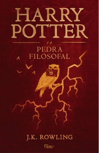
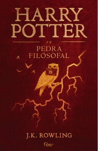

Informações do Livro
Autora: J. K Rowling
Livro: Harry Potter e a Pedra Filosofal
Lançamento: 26 de junho de 1997
Nota: 8/10 - Muito Bom
 

“Harry Potter” e a Pedra Filosofal é mágico – e aqui eu peço perdão pelo trocadilho, mas não há outra palavra no mundo que defina com exatidão o que essa história é. Além disso, pergunte a qualquer jovem de 20/25 anos se ele conhece a história do bruxinho que acabou de completar o seu décimo primeiro aniversário e dificilmente – muito improvável mesmo – a resposta será “não“. Harry Potter é, além de mágico, um fenômeno. Eu, com 23, não havia começado a leitura dos livros até então, devido a alguns vários motivos que não vêm ao caso listar aqui, mas fico imensamente feliz em finalmente poder lê-los. Este é o primeiro de uma série infantojuvenil composta por sete volumes que conquistou e conquista corações desde o seu primeiro lançamento, nos anos 90 lá no Reino Unido, e já é considerada tanto um clássico da literatura jovem quanto a maior série de livros do mundo, pelo menos no que diz respeito a número de cópias vendidas – algo em torno de 500 milhões de exemplares ou mais. A premissa é básica e, de certa forma, encontrada em muitas sagas de sucesso por aí. Entretanto, o mundo criado por J.K. Rowling é realmente encantador e me acolheu de uma maneira que eu não esperava.
Sim, acolheu. ‘Harry Potter e a Pedra Filosofal’ foi um lar para mim. Eu gostei de muitas coisas, para não dizer todas, desse livro. Primeiramente, a simplicidade. Obviamente estamos falando de um livro voltado, a princípio, para crianças, portanto a linguagem precisa se adequar ao seu público-alvo, sendo bem direta e simples, sem muitas descrições e devaneios. Mas, sabe aquela sensação de que existe algo a mais? Gostei também da ambientação e de cada detalhe deste mundo criado pela J.K. Rowling – e quem não gostaria de ir até Hogwarts jogar um pouco de quadribol ou ir à procura de unicórnios ao lado de Hagrid à noite na Floresta Proibida, mesmo que dê arrepios na espinha, ou até mesmo jogar uma partida de xadrez de bruxo? Volto a repetir, este livro é mágico. A imersão é tão poderosa que faz você desejar que tudo seja verdadeiro, além dos limites da ficção. Faz você voltar a ser criança, a sonhar com um lugar em que voar em vassouras é legal e que existe uma aula de poções. Somado a tudo isso, a amizade que eu vi crescer, aos poucos, entre os personagens aqueceu meu coração e, talvez, seja o ápice de tudo. Porque é isso que a autora quis passar, ao meu ver. Que não importa onde você esteja ou o quanto de dinheiro você tenha ou qual nome/legado você carrega. Se não tiver a quem confiar, ou a quem dividir, então não terá nada.
Eu poderia escrever mais uns 10 parágrafos a respeito do que eu senti lendo este livro, mas acredito que tais sensações mereçam ser sentidas. Não importa a sua idade, esta leitura vai trazer à tona a criança que existe dentro de você. Quanto a mim, bom, mal posso esperar para embarcar no Expresso de Hogwarts e começar mais um ano letivo. E J.K Rowling, você me deixou sorrindo feito bobo depois de ter virado a última página. Obrigado!